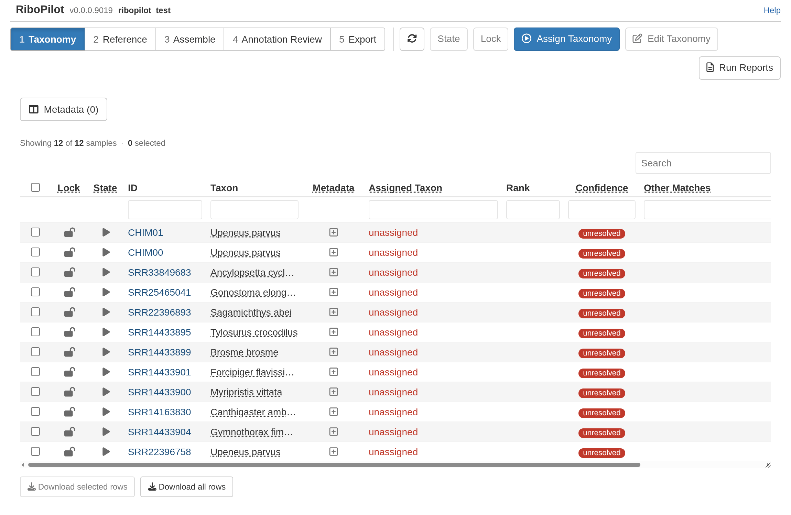

RiboPilot takes genome-skim reads and assembles a GenBank-ready record of the nuclear ribosomal DNA repeat (rDNA). Starting a project requires only a few R commands, everything else happens in a R Shiny app.
If you use MitoPilot, this
will feel familiar. RiboPilot has a similar layout, it takes the same
mapping file, and it can run on the same samples. However, RiboPilot
uses the Taxon column in the map file throughout the
pipeline. Try to provide the species ID whenever possible, although
higher level taxonomic groups should work too. See Your own project.
This guide walks through the test project, a set of 12 samples that ships with RiboPilot: 10 fish genome skims and 2 synthetic samples made to test the checks. We recommend trying the test project before you start on your own data.
This guide assumes that you are working on a local computer rather than a cluster. If working on a cluster, please read over this page first.
HYDRA Are you a Smithsonian user? Boxes like this one flag the places where the Smithsonian Hydra cluster differs from a workstation. Before you start, get an R session on Hydra and install Nextflow: see Smithsonian Hydra setup.
Setup
Before we begin, follow the installation instructions to get RiboPilot set up on your computer or cluster.
The test project (12 samples) took about 20 minutes on a Linux workstation with 16 CPU cores and 61 GB of memory. RiboPilot caps every task at your computer’s CPUs and memory, so a small computer runs more slowly rather than failing.
Samples, contigs, and records
A sample is one row of your mapping file and usually corresponds to
one specimen. Assembling a sample can produce more than one path
(alternate ways to join the same reads), and each path can hold one or
more contigs. Each contig you keep becomes one record in your GenBank
export. A sample with one record is named by its ID. A sample with more
than one record gets names like SRR33849683_p1_s2 (path 1,
contig 2). Export files call the contig number
scaffold.
Create the test project
In R, run:
RiboPilot::new_test_project(path = "~/ribopilot_test")This downloads small read files that hold only each sample’s rDNA reads (a few MB per sample) and sets up the project. The first run later downloads the RiboPilot container image once (about 2.6 GB).
HYDRA Project setup.
Pass executor = "NMNH_Hydra", so the work goes to compute
nodes and runs in Singularity instead of Docker:
RiboPilot::new_test_project(
path = "/pool/public/genomics/<USER>/RiboPilot/test_project",
executor = "NMNH_Hydra"
)Put projects under /pool or /scratch. Home
folders are far too small. By default Singularity’s download cache and
the reference folder also sit in your home folder; Disk space, caches, and offline use
shows how to move them.
While RiboPilot is in private preview, this download needs a GitHub token; see Installation. You may also see two warnings that the default fish reference database is not reachable. That is expected: RiboPilot does not ship a reference database, and the Reference step builds the ones the test project needs.
The 10 fish are real genome skims from NCBI’s Sequence Read Archive. CHIM00 and CHIM01 are synthetic: CHIM00 is a clean copy of one fish’s rDNA, and CHIM01 joins that fish’s 18S to the 28S of a Penicillium mold. CHIM01 is there so you can see the checks catch a mixed-up record.
Open the app
RiboPilot::RiboPilot("~/ribopilot_test")HYDRA Run the same command from RStudio Server; see Smithsonian Hydra setup.
The app opens in your browser on the Taxonomy step. The toolbar shows the five steps in order, and each step has its own table. Click a row to select it, or tick the box in the header to select every row still shown. Click a sample’s ID or its details button see additional information. Download selected rows and Download all rows under each table save it as a CSV file.

Two buttons appear in every step:
- State sets whether a row runs the next time you press Update. The pipeline sets states itself; use the button to override one. There are five states:
| State | Meaning |
|---|---|
| On hold | Skipped by the next Update until you set it to Ready to run |
| Ready to run | Queued: the next Update will process it |
| In progress | Being processed by the running pipeline |
| Success | Finished without errors |
| Failed | Open the sample’s details to see why and what to try next |
On Annotation Review, State offers only Ready to run, which queues a contig for that step’s own Update, and On hold, which keeps it out. A contig the pipeline has not finished annotating shows a sixth state there, Waiting for Assemble Update; see Test project: Annotation Review.
- Lock means “I am done with this step for these rows”. Locked rows cannot have their analysis options for that step changed, the next update does not re-run them, and they move on to the next step. You can unlock at any time.
The lock and state icons at the left of each row are buttons too: clicking a row’s lock icon locks or unlocks that row alone, and clicking its state icon sets the state of that row alone.
Test project walkthrough
The app has five steps. Each page below walks through one of them with the test project. Do them in order:
Where to go next
After the walkthrough, Your own project shows how to write a mapping file and set up a project for your samples. If you work on a computing cluster, read Running on a cluster; if something goes wrong, see Troubleshooting.